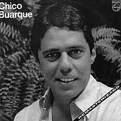
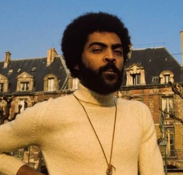

Chico Buarque: Um dos maiores letristas e contadores de histórias da MPB, famoso por sua poesia sofisticada e crônicas do cotidiano, sempre com um olhar atento e crítico às questões sociais e humanas do Brasil.
Apesar de Você: Lançada em 1970 com um ritmo animado e contagiante de samba, é uma resposta direta e afrontosa ao regime ditatorial. A letra foi construída com duplos sentidos para passar pela censura inicial.
Geraldo Vandré: Compositor de forte viés político e figura central dos grandes festivais de música na televisão brasileira durante os anos 1960.
Pra Não Dizer Que Não Falei das Flores: Também conhecida como "Caminhando", esta marcha de 1968 tornou-se um hino da resistência no Brasil.
Caetano Veloso: Intelectual, provocador e um dos principais criadores da Tropicália, reconhecido por romper fronteiras estéticas e comportamentais.
Alegria, Alegria: Apresentada no festival de 1967, introduziu guitarras elétricas na MPB e defendeu a liberdade por meio de imagens da cultura pop.
Elis Regina: Uma das maiores intérpretes vocais da história do país, reconhecida por sua técnica e expressividade dramática.
O Bêbado e a Equilibrista: Imortalizada por Elis em 1979, tornou-se um hino da Anistia e homenageou os exilados políticos que retornavam ao Brasil.


Gilberto Gil: Ícone tropicalista que funde ritmos nordestinos, rock, reggae e elementos globais.
Cálice: Escrita em parceria com Chico Buarque, driblou os censores com o jogo fonético entre "cálice" e "cale-se", denunciando a censura.
Ney Matogrosso: Performer revolucionário, dono de uma voz rara e de uma presença de palco teatral e provocativa.
Sangue Latino: Lançada em 1973 pelo grupo Secos & Molhados, é um grito de resiliência sobre a identidade e as dificuldades da América Latina.
Gonzaguinha: Compositor intenso e autêntico, conhecido por letras que enfrentavam a realidade social.
Comportamento Geral: Lançada em 1973, critica a docilidade, a submissão e o conformismo exigidos pelo autoritarismo.
Milton Nascimento: Pilar do Clube da Esquina, reconhecido por sua voz e harmonias complexas.
Coração de Estudante: A canção embalou a transição para a democracia e as Diretas Já, simbolizando luto e esperança.
Raul Seixas: Conhecido como o pai do rock brasileiro, misturava rock, filosofia, misticismo e deboche.
Mosca na Sopa: Usa a mosca como metáfora para o incômodo causado pela contracultura ao sistema conservador.